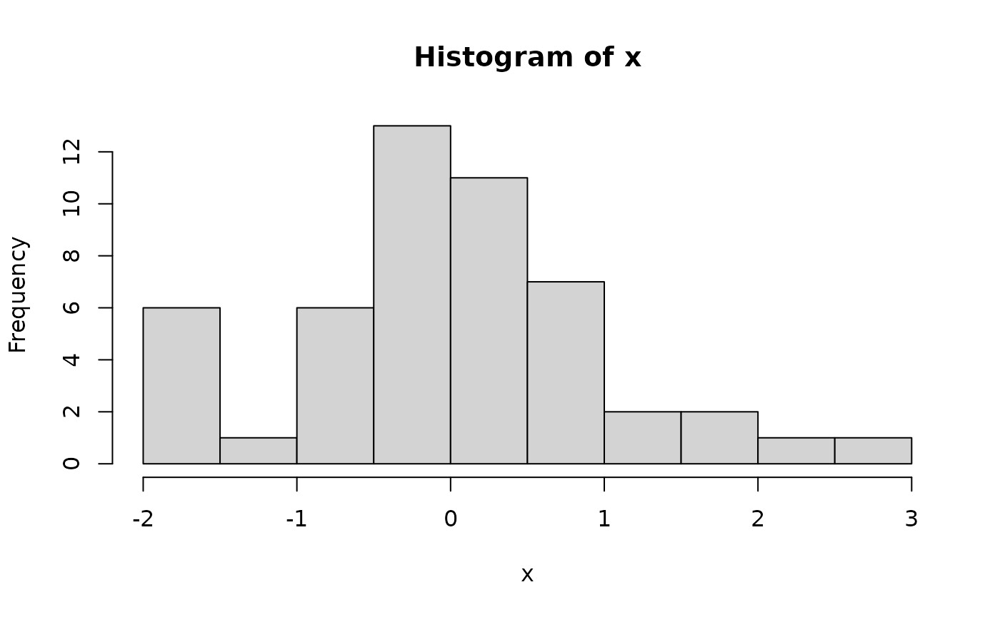

Miscellaneous Functions for ‘SciViews::R’
Philippe Grosjean
2024-05-01
Source:vignettes/svMisc.Rmd
svMisc.RmdThe {svMisc} package contains a large collection of functions that are useful in the context of (G)UI (Graphical) User Interface development, and also, of more general usage. Here is a series of functions you should look at.
Help
In R, you access man pages for the various R objects with
help(topic), or ?topic. But, if
topic is not found, these function do not return a very
useful information. For instance, if you want to make a Kalman filtering in R,
you may be inclined to search for the topic kalman
?kalman
#> No documentation for 'kalman' in specified packages and libraries:
#> you could try '??kalman'OK, it is suggested to use ?? to search the
documentation for kalman. However, using
about() instead immediately produces a more useful
result:
library(svMisc)
about("kalman")
#> 'kalman' not found, do you mean?
#> stats::KalmanForecast, stats::KalmanLike, stats::KalmanRun, stats::KalmanSmooth
#> Searching keyword in all R help pages for ''...… and it also provides a list of potential man pages that could
interest you. In case the topic is found, about() does the
same as help() and shows the page (try with
about("log"), for instance). If you still have not found
what you are looking for, you could try to search on the Web by using
search_web().
You may also be interested by is_help() that indicates
if an object is associated with a man page, and if it has a running
example.
Packages
In R, the use of library() to load a
package is very confusing. Given the number of
questions raised about it, one could consider another function to load R
packages in memory. svMisc proposes package().
That function loads one or several R packages as silently as possible
and it returns TRUE only if all the
packages are loaded. Otherwise, the list of missing packages is
recorded1, and one could simply issue
Install() to install them. This is indeed a semi-automatic
installation mechanisms for R packages. The UseR still masters the
process, but it is more straightforward.
Analyses in batch and show progression
If you need to perform an analysis in batch mode, you may be happy
with batch() and progress(). The first
function runs a function sequentially on all items allowing for
an informative message in case of failure. Also,
batch() provides a mechanism to recover from the error, so
that following items in the list are also analyzed. Indeed, if you use a
simple for() loop or applyXXX() functions, the
execution is stopped at the first error encountered. Imagine 500 items
to process, and an error that appears at the second one… it leaves you
498 items unanalyzed! allows to continue to the next item.
The example shows a fake batch process of files, which fails randomly. Here is the function to run sequentially:
fake_process <- function(file) {
message("Processing ", file, "...")
flush.console()
Sys.sleep(0.5)
if (runif(1) > 0.7) {# Fail
warning("fake_process was unable to process ", file)
invisible(FALSE)
} else invisible(TRUE)
}The key aspect here is that you function, instead of using
stop() must use warning() and return
FALSE. Otherwise, in case of success, it should return
TRUE. Then, calling your function on a series of objects is
straightforward:
# Run it in batch mode on ten items
batch(paste0("file", 1:10), fake_process)
#> Running the batch process with fake_process...
#>
#> Progress: 1 on 10 Progress: 2 on 10
#> Warning in fun(item, ...): fake_process was unable to process file2
#>
#> Progress: 3 on 10 Progress: 4 on 10 Progress: 5 on 10 Progress: 6 on 10 Progress: 7 on 10 Progress: 8 on 10 Progress: 9 on 10
#> Warning in fun(item, ...): fake_process was unable to process file9
#>
#> Progress: 10 on 10
#> Warning in fun(item, ...): fake_process was unable to process file10
#> Processed successfully 7 items on 10 (see .last.batch)In case an error occurred, the information is recorded i,
.last.batch:
.last.batch
#> [1] FALSE
#> attr(,"items")
#> [1] "file1" "file2" "file3" "file4" "file5" "file6" "file7" "file8"
#> [9] "file9" "file10"
#> attr(,"ok")
#> [1] TRUE FALSE TRUE TRUE TRUE TRUE TRUE TRUE FALSE FALSEThe items and ok attributes are also
available from that object for further inspection and action.
If you run batch() in R, you noted also the
progress()ion message that appeared. Indeed the
progress() function allows to display such a message,
either as a text at the R console, or in a dialog box. There are many
different forms, see the man page ?progress. for instance,
here is a progress bar in percent, stopped at 75% () you need to call
progress() with a value higher than
max.value = to dismiss it):
for (i in 0:75) {
progress(i, progress.bar = TRUE)
# Some process here...
}
#> 0%---------25%---------50%---------75%--------100%
#> Progress: ||||||||||||||||||||||||||||||||||||||Subsettable functions
The $ operator is not applicable on functions. It is not
meaningful in that context. Yet, it may be convenient to use it in
certain conditions. From the example of ?subsettable:
foo <- structure(function(x, type = c("histogram", "boxplot"), ...) {
type <- match.arg(type, c("histogram", "boxplot"))
switch(type,
histogram = hist(x, ...),
boxplot = boxplot(x, ...),
stop("unknow type")
)
}, class = c("function", "subsettable_type"))
foo
#> function(x, type = c("histogram", "boxplot"), ...) {
#> type <- match.arg(type, c("histogram", "boxplot"))
#> switch(type,
#> histogram = hist(x, ...),
#> boxplot = boxplot(x, ...),
#> stop("unknow type")
#> )
#> }
#> attr(,"class")
#> [1] "function" "subsettable_type"
# This function can be used as usual:
foo(rnorm(50), type = "histogram")
# ... but also this way:
foo$histogram(rnorm(50))
foo$boxplot(rnorm(50))Capture and parse R code
The capture.output() function from the ‘utils’ package
can capture output usually send to the R console, but it does so in an
imperfect way. If you want to capture output exactly as it
would appear at the R console, you could use
capture_all():
captured <- capture_all(parse_text('1:2 + 1:3'), split = FALSE)
captured
#> [1] ":> 1:2 + 1:3"
#> [2] "[1] 2 4 4"
#> [3] "Warning message:"
#> [4] "In 1:2 + 1:3 : longer object length is not a multiple of shorter object length\n"Only the prompt is changed to :>. You can use that
content, or print it somewhere, for instance:
writeLines(captured)
#> :> 1:2 + 1:3
#> [1] 2 4 4
#> Warning message:
#> In 1:2 + 1:3 : longer object length is not a multiple of shorter object lengthThe parse_text() function parse one or more character
strings exactly as if they were commands entered at the R prompt:
parse_text(c("1 + 1", "log(10)"))
#> expression(1 + 1, log(10))… and for an incomplete expression:
parse_text("log(")
#> [1] NAThe source_clipboard() source code directly from the
clipboard. All these functions form the basis to simulate an R console
in a different context (a console widget in your own GUI). You can
combine this with to_rjson()/eval_rjson to
encode and decode R objects on both sides of a pipeline between the R
process and your GUI.
Encode/decode R objects in Rjson
Rjson is a version of JSON that allows to encore
and decode rapidly almost all R objects. From the example at
?to_rjson:
# A complex R object
# Note: we round doubles to 14 digits because precision is lost in the process
obj <- structure(list(
a = as.double(c(1:5, 6)),
LETTERS,
c = c(c1 = 4.5, c2 = 7.8, c3 = Inf, c4 = -Inf, NA, c6 = NaN),
c(TRUE, FALSE, NA),
e = factor(c("a", "b", "a")),
f = 'this is a "string" with quote',
g = matrix(round(rnorm(4), 14), ncol = 2),
`h&$@` = list(x = 1:3, y = round(rnorm(3), 14),
fact = factor(c("b", "a", "b"))),
i = Sys.Date(),
j = list(1:5, y = "another item")),
comment = "My comment",
anAttrib = 1:10,
anotherAttrib = list(TRUE, y = 1:4))
# Convert to RJSON
(rjson1 <- to_rjson(obj, attributes = TRUE))
#> [1] list("Data_" := list("a" := c(1., 2., 3., 4., 5., 6.), "" := c("A",
#> [2] "B", "C", "D", "E", "F", "G", "H", "I", "J", "K", "L", "M", "N",
#> [3] "O", "P", "Q", "R", "S", "T", "U", "V", "W", "X", "Y", "Z"),
#> [4] "c" := c(c1 = 4.5, c2 = 7.8, c3 = Inf, c4 = -Inf,
#> [5] NA, c6 = NaN), "" := c(TRUE, FALSE, NA), "e" := list("Data_" := c(1,
#> [6] 2, 1), "levels" := c("a", "b"), "class" := "factor"),
#> [7] "f" := "this is a \\"string\\" with quote", "g" := list("Data_" := c(0.67768364430139,
#> [8] 0.03849954706442, -0.35638118700401, 0.78284410183982), "dim" := c(2,
#> [9] 2)), "h&$@" := list("x" := seq(1, 3), "y" := c(0.80441161612924,
#> [10] -1.90006082335695, 0.93578428615882), "fact" := list("Data_" := c(2,
#> [11] 1, 2), "levels" := c("a", "b"), "class" := "factor")),
#> [12] "i" := list("Data_" := 19844., "class" := "Date"),
#> [13] "j" := list("" := seq(1, 5), "y" := "another item")), "comment" := "My comment", "anAttrib" := seq(1, 10), "anotherAttrib" := list(
#> [14] "" := TRUE, "y" := seq(1, 4)))
# Get back an R object from Rjson
(obj2 <- eval_rjson(rjson1))
#> $a
#> [1] 1 2 3 4 5 6
#>
#> [[2]]
#> [1] "A" "B" "C" "D" "E" "F" "G" "H" "I" "J" "K" "L" "M" "N" "O" "P" "Q" "R" "S"
#> [20] "T" "U" "V" "W" "X" "Y" "Z"
#>
#> $c
#> c1 c2 c3 c4 c6
#> 4.5 7.8 Inf -Inf NA NaN
#>
#> [[4]]
#> [1] TRUE FALSE NA
#>
#> $e
#> [1] a b a
#> Levels: a b
#>
#> $f
#> [1] "this is a \"string\" with quote"
#>
#> $g
#> [,1] [,2]
#> [1,] 0.67768364 -0.3563812
#> [2,] 0.03849955 0.7828441
#>
#> $`h&$@`
#> $`h&$@`$x
#> [1] 1 2 3
#>
#> $`h&$@`$y
#> [1] 0.8044116 -1.9000608 0.9357843
#>
#> $`h&$@`$fact
#> [1] b a b
#> Levels: a b
#>
#>
#> $i
#> [1] "2024-05-01"
#>
#> $j
#> $j[[1]]
#> [1] 1 2 3 4 5
#>
#> $j$y
#> [1] "another item"
#>
#>
#> attr(,"anAttrib")
#> [1] 1 2 3 4 5 6 7 8 9 10
#> attr(,"anotherAttrib")
#> attr(,"anotherAttrib")[[1]]
#> [1] TRUE
#>
#> attr(,"anotherAttrib")$y
#> [1] 1 2 3 4
# Is it identical to obj?
identical(obj, obj2)
#> [1] TRUEGet system file or directory
There are several different functions in R to access system files, or
files inside R packages: R.home(),
system.file(), Sys.which(),
tempdir(). The system_dir() and
system_file() functions centralize their functionalities.
For instance:
- Get the temporary directory used by this R process
system_dir("temp")
#> [1] "/tmp/Rtmp6KLGTW"- Get the system temporary directory
system_dir("sysTemp")
#> [1] "/tmp"- Get the home directory of the current user
system_dir("user")
#> [1] "/home/runner"- Get the R home directory
system_dir("home")
#> [1] "/opt/R/4.4.0/lib/R"- Get the path to an executable
system_dir("zip", exec = TRUE)
#> [1] "/usr/bin"- Get the file of that executable
system_file("zip", exec = TRUE)
#> [1] "/usr/bin/zip"- Get the root directory of a package
system_dir(package = "stats")
#> [1] "/opt/R/4.4.0/lib/R/library/stats"- Get a file from a package
system_file("help", "AnIndex", package = "splines")
#> [1] "/opt/R/4.4.0/lib/R/library/splines/help/AnIndex"There are other possibilities. See ?system_dir. You may
also be interested by file_edit() that allows to create and
edit a text file from a template.
Various information functions
-
compare_r_version()conveniently compares the current R version with a specified one. It returns 1 if it is newer, 0, if it is equal and -1 if it is older.
compare_r_version("5.6.0") # Probably older
#> [1] -1
compare_r_version("0.6.0") # Probably newer
#> [1] 1- Check the environment:
is_win() # Windows?
#> [1] FALSE
is_mac() # MacOS?
#> [1] FALSE
is_rgui() # Is it RGui under Windows?
#> [1] FALSE
is_sdi() # Is RGui run in SDI mode (separate windows)?
#> [1] FALSE
is_rstudio() # Is it RStudio?
#> [1] FALSE
is_rstudio_desktop() # RStudio desktop?
#> [1] FALSE
is_rstudio_server() # RStudio server?
#> [1] FALSE
is_jgr() # Is R running under JGR?
#> [1] FALSEMiscellaneous
- Make sure a vector is of a defined mode and length (possibly by
applying recycling rule) using
def():
def(0:2, mode = "logical", length.out = 5) # logical, size 5
#> [1] FALSE TRUE TRUE FALSE TRUE- Get a nicely formatted
args()(see?arg_tipsfor other functions to get short textual information about functions):
args_tip("ls")
#> [1] "ls(name, pos = -1L, envir = as.environment(pos), all.names = FALSE, pattern,\n sorted = TRUE)"- Get the name of an (unused) temporary variable:
temp_var("my_var")
#> [1] "my_var37864"- Manage a temporary environment attached to the search path using
TempEnv()and thetemp_XXX()functions. The temporary_environment vignette gives more details on this series of functions.
search()
#> [1] ".GlobalEnv" "package:svMisc" "package:stats"
#> [4] "package:graphics" "package:grDevices" "package:utils"
#> [7] "package:datasets" "package:methods" "Autoloads"
#> [10] "SciViews:TempEnv" "tools:callr" "package:base"
# Assign a variable in a temporary environment
assign_temp("my_var", 1:5)
# The environment is named SciViews:TempEnv
search()
#> [1] ".GlobalEnv" "package:svMisc" "package:stats"
#> [4] "package:graphics" "package:grDevices" "package:utils"
#> [7] "package:datasets" "package:methods" "Autoloads"
#> [10] "SciViews:TempEnv" "tools:callr" "package:base"
# Get the variable
get_temp("my_var")
#> [1] 1 2 3 4 5
# List variables in the temporary environment
ls(envir = TempEnv())
#> [1] "last.warning" "my_var"
# Delete the variable
rm_temp("my_var")The list of missing packages is written in a variable named
.packages_to_installlocated in theSciViews:TempEnvenvironment↩︎